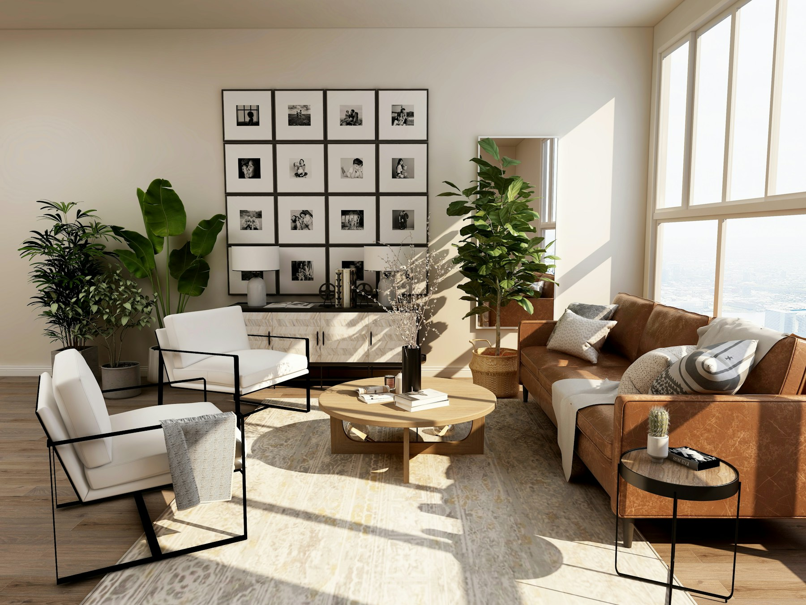

Révéler
les lieux.
Imaginer
la suite.
Un nouveau regard sur l’existant.
Une architecture à vivre.

Chaque lieu a une histoire.
La suite s’écrit ensemble.
SOAR — Soraya Architecture Studio est une agence d’architecture basée à Montreuil, dirigée par Soraya Arab.
Le studio travaille principalement sur des projets de réhabilitation, à différentes échelles, des premières études jusqu’au suivi de chantier.
Transformer un lieu commence par le comprendre : ses usages, ses qualités, ses contraintes. Notre proposition pour SOAR place l’existant, la matière et la lumière au cœur de cette conversation.
Explorer notre approche ↗L’espace, autrement.
Un carnet d’inspirations.
Des matières, des volumes, des possibles.
Ces images composent un carnet d’inspirations. Elles ne représentent pas des réalisations du studio. Photographies : Unsplash.
De l’intuition
au lieu de vie.
Une proposition de méthode pour construire
un dialogue autour de votre projet.
01 Écouter & observer +
Partager vos envies, comprendre les usages et regarder attentivement le lieu. Poser ensemble les bonnes questions avant de dessiner.
02 Imaginer & dessiner +
Explorer les volumes, la lumière et les matières. Mettre les idées en dialogue avec les contraintes du site et les objectifs du projet.
03 Préciser & préparer +
Affiner les choix, préciser les détails et préparer les documents nécessaires à la réalisation, selon la mission confiée au studio.
04 Accompagner & réaliser +
Faire vivre le projet pendant le chantier, en lien avec les intervenants, pour donner une cohérence à chaque étape de sa transformation.